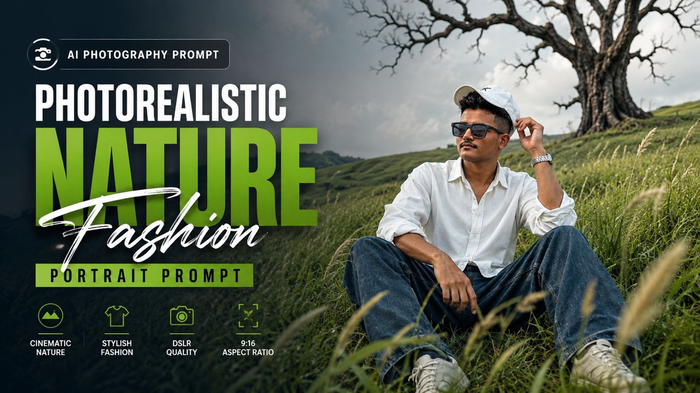
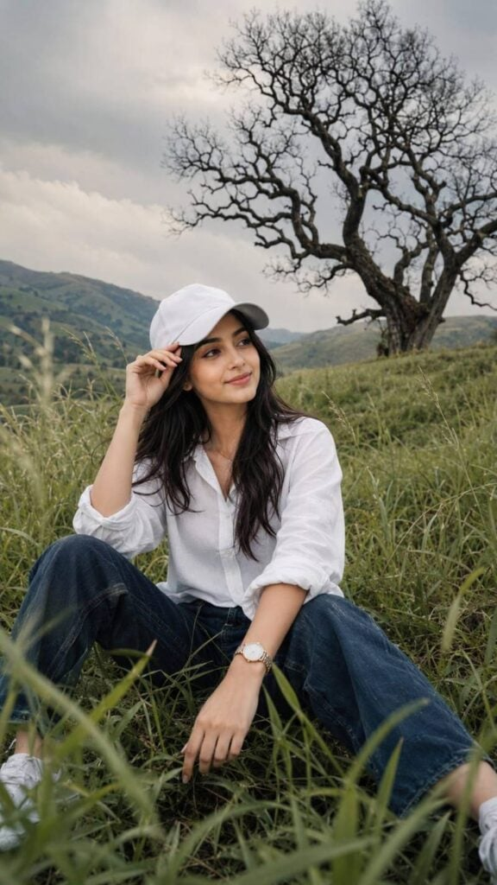
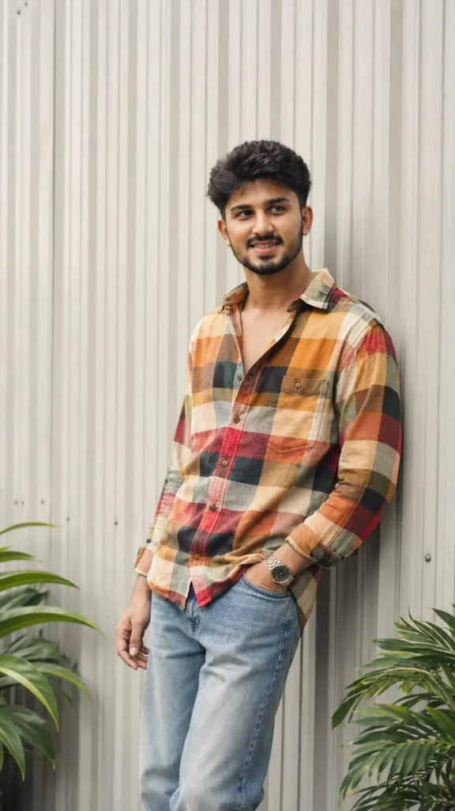
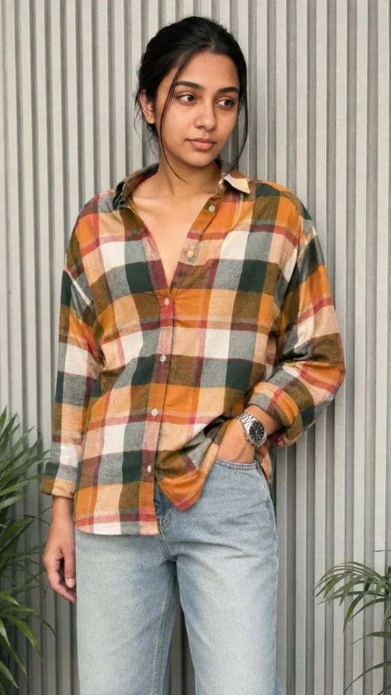

Home / Photorealistic Nature Fashion Portrait Prompt
Photorealistic Nature Fashion Portrait Prompt
By Prompt Library•28 August 2026

AI-generated photography is becoming more popular every day, especially when it comes to creating realistic fashion and nature portraits. With the right AI image prompt, you can create professional-looking photos with beautiful landscapes, natural lighting, stylish outfits, and cinematic compositions.
In this article, we are sharing a Photorealistic Nature Fashion Portrait Prompt that can help you create a realistic outdoor fashion portrait. The prompt is designed for users who want to generate a cinematic countryside photo while keeping the person’s facial identity as close as possible to the uploaded reference image.
Whether you are creating images for Instagram, social media, a personal project, or simply experimenting with AI photography, this prompt can be a great starting point.
Want more awesome prompts?
Join our community and get the latest viral prompts daily.
Photorealistic Nature Fashion Portrait Prompt A photorealistic cinematic vertical portrait of a stylish young man sitting casually in the middle of a lush, overgrown green grass field on a gentle hillside. He is surrounded by tall, flowing wild grass that creates a natural layered foreground and immersive countryside atmosphere. The young man is wearing a crisp oversized white button-up shirt with the sleeves casually rolled up, relaxed dark blue loose-fit jeans, clean light-colored sneakers, and a simple white baseball cap. He wears a stylish wristwatch on one wrist. His pose is relaxed and natural, sitting with his legs apart, one hand resting near his knee while the other hand lightly holds the brim of his cap. His head is turned sideways, looking away from the camera with a calm, thoughtful expression. In the background stands a dramatic large leafless tree with twisting dark branches, creating a striking contrast against the soft pale cloudy sky. The rolling green landscape, wild grass, and solitary tree create a peaceful, cinematic, slightly melancholic mood. Soft natural daylight, muted warm tones, realistic shadows, gentle atmospheric haze, detailed grass texture moving naturally in the breeze, realistic fabric folds, natural skin texture, shallow depth of field, DSLR photography, cinematic color grading, premium editorial photography, ultra-realistic, highly detailed, natural human proportions, vertical composition, 9:16 aspect ratio. Use the uploaded reference face as the highest priority. Preserve 100% facial identity accuracy. Keep the exact face shape, jawline, eyes, eyebrows, nose, lips, skin texture, torehead, hairline, and natural proportions unchanged. Do not beautify, stylize, modify, or reinterpret facial features. Maintain the same age, expression, and ethnicity as the reference image. Ensure the face is instantly recognizable as the same person in real life. Ultra-realistic photography, natural skin details, authentic facial structure, no face swapping artifacts, no Al-generated facial alterations, no exaggerated features, no symmetry correction, no cosmetic enhancements. Size 9 :16 .

? AI PROMPT
Photorealistic Nature Fashion Portrait Prompt A photorealistic cinematic vertical portrait of a stylish young woman sitting casually in the middle of a lush, overgrown green grass field on a gentle hillside. He is surrounded by tall, flowing wild grass that creates a natural layered foreground and immersive countryside atmosphere. The young woman is wearing a crisp oversized white button-up shirt with the sleeves casually rolled up, relaxed dark blue loose-fit jeans, clean light-colored sneakers, and a simple white baseball cap. He wears a stylish wristwatch on one wrist. His pose is relaxed and natural, sitting with his legs apart, one hand resting near his knee while the other hand lightly holds the brim of his cap. His head is turned sideways, looking away from the camera with a calm, thoughtful expression. In the background stands a dramatic large leafless tree with twisting dark branches, creating a striking contrast against the soft pale cloudy sky. The rolling green landscape, wild grass, and solitary tree create a peaceful, cinematic, slightly melancholic mood. Soft natural daylight, muted warm tones, realistic shadows, gentle atmospheric haze, detailed grass texture moving naturally in the breeze, realistic fabric folds, natural skin texture, shallow depth of field, DSLR photography, cinematic color grading, premium editorial photography, ultra-realistic, highly detailed, natural human proportions, vertical composition, 9:16 aspect ratio. Use the uploaded reference face as the highest priority. Preserve 100% facial identity accuracy. Keep the exact face shape, jawline, eyes, eyebrows, nose, lips, skin texture, torehead, hairline, and natural proportions unchanged. Do not beautify, stylize, modify, or reinterpret facial features. Maintain the same age, expression, and ethnicity as the reference image. Ensure the face is instantly recognizable as the same person in real life. Ultra-realistic photography, natural skin details, authentic facial structure, no face swapping artifacts, no Al-generated facial alterations, no exaggerated features, no symmetry correction, no cosmetic enhancements. Soze 9 : 16

? AI PROMPT
Use the uploaded image as the primary and highest-priority visual reference for the subject’s facial identity, appearance, pose, outfit, composition, lighting, and overall atmosphere.
Create an ultra-realistic cinematic fashion portrait of the same young South Asian man standing casually against a modern light-gray vertically ribbed metal wall.
Face & Identity — Absolute Face Lock: Preserve the subject’s exact facial identity from the reference image with zero deviation. Keep the same face shape, jawline, cheekbones, eyebrows, eyes, nose, lips, ears, beard and mustache pattern, hairline, hairstyle, skin tone, natural skin texture, and facial proportions. Do not beautify, smooth, reshape, age, de-age, or alter the face. No identity drift.
Hair: Thick, naturally voluminous black hair with a slightly messy textured finish, styled upward and backward with natural strands and realistic detail.
Pose & Composition: Full upper-body to thighs visible. The man is leaning casually against the wall with his body slightly angled. His head is turned subtly toward the right side of the frame, looking away from the camera with a confident, calm expression. One hand is naturally placed inside the front pocket of his jeans while the other hangs relaxed near his thigh. Natural relaxed posture, realistic anatomy and proportions.
Outfit: Oversized long-sleeve multicolor plaid/checkered shirt featuring warm mustard yellow, orange, cream, dark green, red, and white checks. Shirt worn casually with several upper buttons open, relaxed oversized fit and natural fabric folds. Light-wash relaxed-fit denim jeans with realistic faded texture. Add a premium metallic wristwatch on the wrist.
Environment: Minimal modern architectural background with pale gray vertical corrugated/ribbed metal panels. Subtle green tropical plant leaves visible near the bottom edges of the frame. Clean, stylish urban fashion setting.
Lighting: Soft natural daylight with gentle directional shadows, realistic highlights on the face and clothing, subtle warm cinematic tones, balanced exposure, natural skin rendering.
Photography: High-end fashion editorial photography, realistic DSLR look, 50mm lens, shallow depth of field, crisp subject detail, soft background separation, natural perspective, HDR, ultra-detailed fabric texture, realistic skin pores, physically accurate shadows, premium color grading.
Quality: Photorealistic, ultra-detailed, 4K/8K quality, sharp focus, realistic anatomy, authentic clothing texture, cinematic Instagram fashion aesthetic, no artificial-looking AI artifacts.
Aspect ratio: 9:16 vertical.
Negative prompt: distorted face, identity change, different person, facial reconstruction, excessive skin smoothing, plastic skin, beauty filter, unrealistic body proportions, extra fingers, malformed hands, duplicate limbs, warped clothing, distorted sunglasses, blurry face, low resolution, oversaturated colors, cartoon, CGI, illustration, artificial skin, excessive sharpening, bad anatomy.
Use the uploaded reference face as the highest priority. Preserve 100% facial identity accuracy. Keep the exact face shape, jawline, eyes, eyebrows, nose, lips, skin texture, torehead, hairline, and natural proportions unchanged. Do not beautify, stylize, modify, or reinterpret facial features.
Maintain the same age, expression, and ethnicity as the reference image. Ensure the face is instantly recognizable as the same person in real life. Ultra-realistic photography, natural skin details, authentic facial structure, no face swapping artifacts, no Al-generated facial alterations, no exaggerated features, no symmetry correction, no cosmetic enhancements.

? AI PROMPT
Use the uploaded image as the primary and highest-priority visual reference for the subject’s facial identity, appearance, pose, outfit, composition, lighting, and overall atmosphere.
Create an ultra-realistic cinematic fashion portrait of the same young South Asian woman standing casually against a modern light-gray vertically ribbed metal wall.
Face & Identity — Absolute Face Lock: Preserve the subject’s exact facial identity from the reference image with zero deviation. Keep the same face shape, jawline, cheekbones, eyebrows, eyes, nose, lips, ears, beard and mustache pattern, hairline, hairstyle, skin tone, natural skin texture, and facial proportions. Do not beautify, smooth, reshape, age, de-age, or alter the face. No identity drift.
Hair: Thick, naturally voluminous black hair with a slightly messy textured finish, styled upward and backward with natural strands and realistic detail.
Pose & Composition: Full upper-body to thighs visible. The woman is leaning casually against the wall with his body slightly angled. His head is turned subtly toward the right side of the frame, looking away from the camera with a confident, calm expression. One hand is naturally placed inside the front pocket of his jeans while the other hangs relaxed near his thigh. Natural relaxed posture, realistic anatomy and proportions.
Outfit: Oversized long-sleeve multicolor plaid/checkered shirt featuring warm mustard yellow, orange, cream, dark green, red, and white checks. Shirt worn casually with several upper buttons open, relaxed oversized fit and natural fabric folds. Light-wash relaxed-fit denim jeans with realistic faded texture. Add a premium metallic wristwatch on the wrist.
Environment: Minimal modern architectural background with pale gray vertical corrugated/ribbed metal panels. Subtle green tropical plant leaves visible near the bottom edges of the frame. Clean, stylish urban fashion setting.
Lighting: Soft natural daylight with gentle directional shadows, realistic highlights on the face and clothing, subtle warm cinematic tones, balanced exposure, natural skin rendering.
Photography: High-end fashion editorial photography, realistic DSLR look, 50mm lens, shallow depth of field, crisp subject detail, soft background separation, natural perspective, HDR, ultra-detailed fabric texture, realistic skin pores, physically accurate shadows, premium color grading.
Quality: Photorealistic, ultra-detailed, 4K/8K quality, sharp focus, realistic anatomy, authentic clothing texture, cinematic Instagram fashion aesthetic, no artificial-looking AI artifacts.
Aspect ratio: 9:16 vertical.
Negative prompt: distorted face, identity change, different person, facial reconstruction, excessive skin smoothing, plastic skin, beauty filter, unrealistic body proportions, extra fingers, malformed hands, duplicate limbs, warped clothing, distorted sunglasses, blurry face, low resolution, oversaturated colors, cartoon, CGI, illustration, artificial skin, excessive sharpening, bad anatomy.
Use the uploaded reference face as the highest priority. Preserve 100% facial identity accuracy. Keep the exact face shape, jawline, eyes, eyebrows, nose, lips, skin texture, torehead, hairline, and natural proportions unchanged. Do not beautify, stylize, modify, or reinterpret facial features.
Maintain the same age, expression, and ethnicity as the reference image. Ensure the face is instantly recognizable as the same person in real life. Ultra-realistic photography, natural skin details, authentic facial structure, no face swapping artifacts, no Al-generated facial alterations, no exaggerated features, no symmetry correction, no cosmetic enhancements.
What Is a Photorealistic Nature Fashion Portrait Prompt?
A photorealistic nature fashion portrait prompt is a detailed text instruction used with an AI image generator to create a realistic fashion photograph in a natural environment.
Instead of simply asking an AI tool to create a picture of a person, the prompt describes important details such as:
The person’s clothing
Body position and sitting pose
Background and landscape
Lighting conditions
Camera style
Facial identity
Image composition
Depth of field
Color grading
Overall mood
Adding these details gives the AI a much clearer idea of the type of photograph you want to create.
Photorealistic Nature Fashion Portrait Prompt
You can copy the prompt below and use it with an AI image generation tool that supports reference images.
Prompt:
A photorealistic cinematic vertical portrait of a stylish young man sitting casually in the middle of a lush, overgrown green grass field on a gentle hillside. He is surrounded by tall, flowing wild grass that creates a natural layered foreground and immersive countryside atmosphere. The young man is wearing a crisp oversized white button-up shirt with the sleeves casually rolled up, relaxed dark blue loose-fit jeans, clean light-colored sneakers, and a simple white baseball cap. He wears a stylish wristwatch on one wrist.
His pose is relaxed and natural, sitting with his legs apart, one hand resting near his knee while the other hand lightly holds the brim of his cap. His head is turned sideways, looking away from the camera with a calm, thoughtful expression.
In the background stands a dramatic large leafless tree with twisting dark branches, creating a striking contrast against the soft pale cloudy sky. The rolling green landscape, wild grass, and solitary tree create a peaceful, cinematic, slightly melancholic mood.
Soft natural daylight, muted warm tones, realistic shadows, gentle atmospheric haze, detailed grass texture moving naturally in the breeze, realistic fabric folds, natural skin texture, shallow depth of field, DSLR photography, cinematic color grading, premium editorial photography, ultra-realistic, highly detailed, natural human proportions, vertical composition, 9:16 aspect ratio.
Use the uploaded reference face as the highest priority. Preserve facial identity as accurately as possible. Keep the face shape, jawline, eyes, eyebrows, nose, lips, forehead, hairline, skin texture, and natural proportions consistent with the reference image. Do not beautify, stylize, modify, or reinterpret facial features. Maintain the same apparent age and natural appearance as the reference image. Ensure the face remains clearly recognizable as the same person.
Ultra-realistic photography, natural skin details, authentic facial structure, no face swapping artifacts, no exaggerated features, no artificial facial alterations, no symmetry correction, no cosmetic enhancements.
Aspect Ratio: 9:16
How to Use This AI Portrait Prompt
Using the prompt is quite simple. First, choose an AI image generator that supports image references. Upload the photograph you want to use as a facial reference.
After uploading the reference image, paste the complete prompt into the prompt box. Make sure the reference image is clearly visible and has a good-quality face.
The AI will use the instructions to create a new outdoor portrait featuring the requested clothing, pose, landscape, lighting, and cinematic atmosphere.
If your AI tool provides options for aspect ratio, select 9:16. This format is particularly useful for Instagram Stories, Reels, Shorts, and other vertical social media content.
Why This Prompt Works Well
One of the biggest advantages of this prompt is that it describes the scene in detail without making the instructions overly complicated.
The lush green grass field creates a natural countryside setting, while the large leafless tree adds visual contrast to the image. The cloudy sky and atmospheric haze help create a soft cinematic mood.
The clothing also plays an important role. The oversized white shirt provides a clean contrast against the green landscape, while dark blue loose-fit jeans give the portrait a casual fashion look.
The prompt also describes the subject’s pose carefully. Instead of simply saying “a man sitting in a field,” it explains the position of his hands, legs, head, and direction of his gaze. This can help the AI produce a more intentional composition.
Tips for Better AI Portrait Results
For the best possible results, keep a few things in mind.
1. Use a Clear Reference Image
A high-quality reference photo can make it easier for an AI tool to understand the person’s facial features. Try to use a photo where the face is clearly visible and not heavily covered by sunglasses, masks, or other objects.
2. Keep the Prompt Detailed
Details matter when creating realistic AI photography. Descriptions of clothing, lighting, environment, camera style, and composition can help guide the final result.
3. Try Different Reference Photos
If the generated face does not look sufficiently similar to the reference, try another clear reference photo. Different AI tools also handle identity consistency differently.
4. Generate Multiple Variations
Your first generation may not always be perfect. Try generating several variations and compare the results. You can also make small changes to the pose, lighting, or background if necessary.
5. Maintain the 9:16 Format
If your main purpose is social media content, 9:16 is a useful vertical format. It fills the screen nicely on most smartphones and works well for short-form video thumbnails and posts.
Best Uses for This Nature Portrait Prompt
This prompt can be useful for several creative projects. For example, you can use the resulting image for:
Instagram posts and Stories
Reels and Shorts concepts
Fashion inspiration
Personal creative projects
AI photography experiments
Social media profile content
Digital artwork concepts
Editorial-style portrait ideas
The natural background also makes the image suitable for users who want something different from the usual studio portrait.
Final Thoughts
The Photorealistic Nature Fashion Portrait Prompt is a simple way to experiment with cinematic AI photography. By combining a natural countryside environment, casual fashion, realistic lighting, and detailed photography instructions, you can create a visually appealing portrait with a professional editorial feel.
The reference-image instructions are also designed to prioritize consistency with the uploaded person’s appearance. However, results can vary depending on the AI image generator, the quality of the reference image, and the settings used.
If you are interested in creating realistic AI portraits, save this prompt and experiment with different reference photos, poses, and natural environments. With a few small adjustments, the same basic concept can be adapted to create many different cinematic fashion portraits.
For more useful AI image prompts, photo editing ideas, and creative AI photography prompts, keep visiting Prompshin.com.